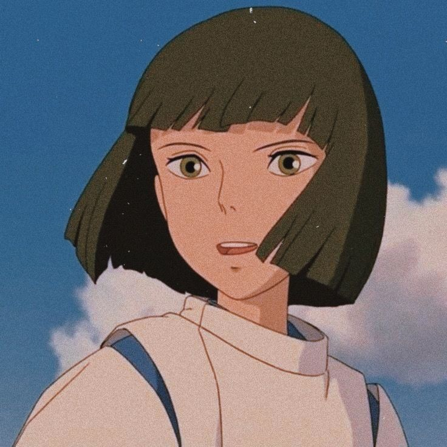

When Marnie Was There
Anna, uma menina solitária e curiosa, decide explorar uma velha mansão abandonada e conhece uma garota loira misteriosa que somente ela consegue ver.
Anna, uma menina solitária e curiosa, decide explorar uma velha mansão abandonada e conhece uma garota loira misteriosa que somente ela consegue ver.
setinha